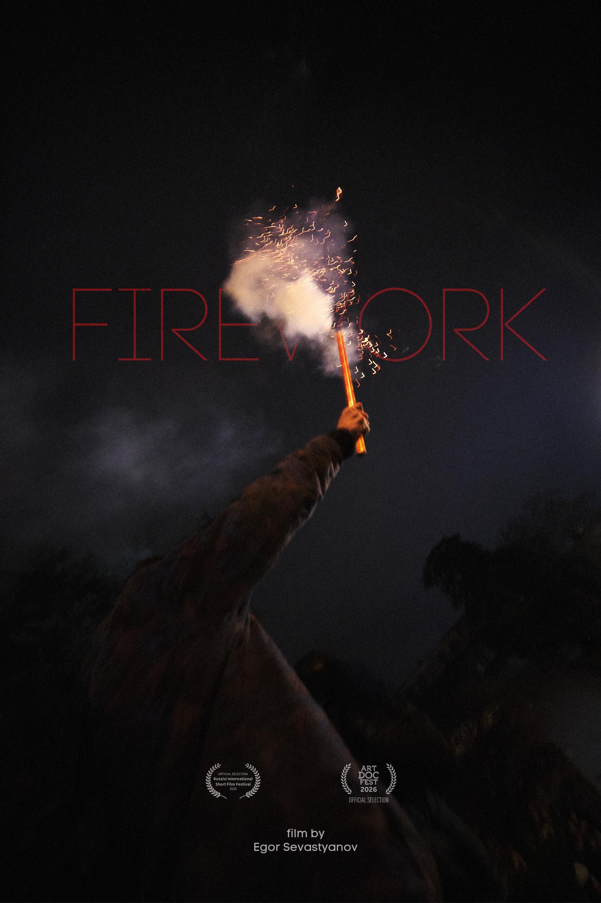

2024–2025
Firework was performed live on the night of December 1–2, 2024, at the closing event of the Rubezh festival in Tbilisi.
That night there were protests and clashes in the streets. During the set I was connected to live radio and to streams from the protests, Mtavari Arkhi among them.
I didn’t know what they would bring. Everything that came through went into resonators and synthesizers, and I played in response, listening closely. Fireworks, chanting, sirens and voices decided where the music went.
No prerecorded samples were used.
Later I cut a ten-minute film from different moments of the set and edited it with my own footage, shot between March 2023 and December 2024.
The full performance is released as Firework (uncut).